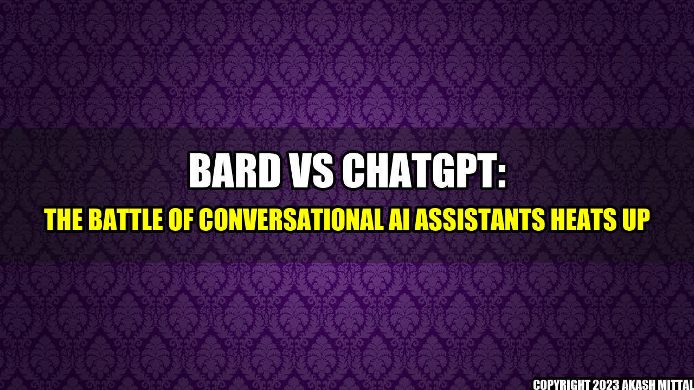

Bard Vs ChatGPT: The Battle of Conversational AI Assistants Heats Up

It was a regular Monday morning at work. John, a young executive, had just settled down and switched on his computer. He had an important meeting with a client in a few hours and was going through his emails when his personal assistant, Bard, popped up on his screen.
"Good morning, John. I've summarized the client's requirements for you in this presentation." Bard said in her soothing voice. "I've also booked your lunch appointment and arranged for a cab to pick you up from the office."
John was impressed. Bard had become an indispensable part of his work life over the past few weeks. She could handle his schedules, make calls, book appointments - all while chatting with him just like a human personal assistant. But he had heard about a new conversational AI assistant named ChatGPT and was curious enough to check it out.
Head-to-Head Comparison of Bard and ChatGPT
John spent the next few days testing out ChatGPT and Bard, comparing their features and testing out their conversational skills. Here are a few key differences between the two:
- Artificial Intelligence: Both assistants use natural language processing and machine learning to understand their users better. However, ChatGPT uses OpenAI's GPT-3, giving it a stronger foundation in language and more natural, human-like responses.
- Customization: Bard is custom-built to serve its users, enabling the personalization of its responses to its customer's specific needs, while ChatGPT is standardized but with pre-built modules that enable modifications of its language model.
- Data Privacy: Bard is transparent with its users’ data privacy, ensuring the confidentiality of user data as well as user data processing in compliance with applicable regulations. ChatGPT has little transparency in its data practices, leaving less assurance about the nature and uses of its user data.
- Learning Speed: Bard takes time to improve in its responses and to become more efficient with each interaction. On the other hand, ChatGPT assimilates relevant answers to questions and is almost instantaneously capable of providing better responses.
- Human-like Personality: Bard's features are such that it can be programmed to have a personality, tone and register, giving a human-like touch to the responses it generates on behalf of its customers, while ChatGPT decisions, on the other hand, are wholly automated.
The market trend in the area of conversational AI is on the rise, with a projected market size of $15.7 billion by 2024. In addition, the global chatbot market size is expected to reach a staggering $9.4 billion by 2024 at a CAGR of 29.7%.
There is no doubt that the rising interest in conversational AI and chatbots is being driven by the desire to enhance customer experience and increase operational efficiency. A great example of this is Bank of America, which has already implemented the ERICA AI chatbot, which is a highly efficient conversational AI banker.
Bard's Upgrades to Compete with ChatGPT
After careful analysis, John realized that while ChatGPT had the edge in terms of AI, Bard's human-like personality and customization features were powerful in their own right. He was happy with Bard's efficiency as it responded more quickly with customized responses to both written and oral commands, while also having the element of a personality programmed to it.
But he was curious about how Bard was planning to compete with the likes of ChatGPT. He spoke with the CEO of Bard, who shared the following upgrades that the company is working on:
- Enhanced Language Model: Bard is working on upgrading its language model, identifying natural language processing trends and patterns that will enable it to understand its users better and to respond to them more effectively in their specific context.
- Improved User Data Protection: Bard recognizes the significance of data privacy regulations and will be upgrading its privacy protocols to align with the most recent industry standards. This will result in more transparency about how user data will be used and stored.
- Personalization Features: Bard will be providing users with new customization tools, enabling them to configure responses according to their preferences and specific needs.
Practical Tips for Businesses Interested in Conversational AI Assistants
Here are a few tips for businesses considering smart conversational assistants:
- Set clear goals: Establish clear goals for the chatbot, including what tasks it will perform, how it should interact, and what data it will need.
- Choose the right assistant: Consider whether you need a custom-built AI assistant like Bard or a pre-built one like ChatGPT.
- Test, evaluate and improve: Conduct tests to evaluate the assistant's performance and user experience before deploying it on a large scale. Continuously monitor the assistant's performance and take actions to improve the assistant's user experience through machine learning.
The advancements in AI technology mean that the impact of the new AI assistants goes beyond the realm of commerce and into everyday life. Some real-life examples showing a tremendous impact of AI assistants include smart homes and manufacturing electronics such as smart TVs and smartphones.
Summary
- Bard and ChatGPT are two conversational AI assistants competing in the market for increased operational efficiency and customer experience.
- Bard has human-like personalization features, while ChatGPT champions a superior AI technology.
- Bard is upgrading its technology to compete with ChatGPT, focusing on language model enhancement, user data protection, and providing its users with more customization options.
References and Hashtags
- References: Bank of America's AI chatbot: https://www.cnbc.com/2020/02/25/bank-of-americas-erica-ai-chatbot-has-nearly-16-million-users.html
- Hashtags: #aiassistants #conversationalai #chatbots #bardvschatgpt
- SEO Keywords: Conversational AI, Artificial Intelligence, Chatbots, Personalized Assistance, Innovation, Technology
- Article Category: Technology
Akash Mittal Tech Article
Share on Twitter Share on LinkedIn